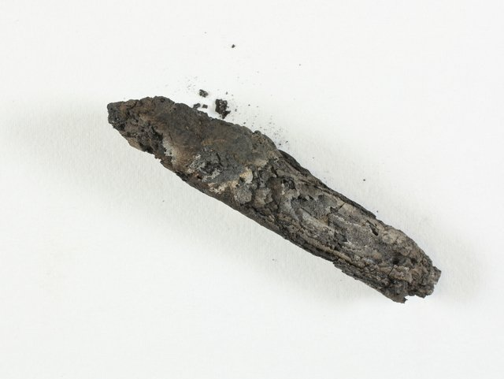

Leviticus 2 — The Mister Translation

⚠ Not a picture of legible text — this is a photograph of a badly burned, still-rolled lump of parchment, recovered from the ark of a synagogue at En-Gedi that burned to the ground around AD 600. For decades no one could open it without destroying it. In 2015, researchers CT-scanned the lump and used 'virtual unwrapping' software to digitally flatten its layers without ever physically unrolling it — and found, preserved inside, the opening verses of Leviticus 2, word-for-word close to the medieval Masoretic text a full millennium before the oldest previously known complete copy. Radiocarbon dating places the parchment itself in the 3rd or 4th century AD. The scan that actually reads the text is a separate, differently-licensed piece of published research (Seales et al., Science Advances, 2016) — the object shown here is only what that scan was performed on.
{kind=link}
The offering with nothing to kill
Every offering in Leviticus 1 required a life; this one requires none. The grain offering (minchah) is the one bloodless sacrifice the book knows — fine flour, oil, and frankincense, presented and burned exactly as the burnt-offering was, but with nothing slaughtered on the way. And the ritual makes a small, precise distinction the English can flatten if it isn’t careful: the priest takes only a HANDFUL (qomets) of the flour and oil, and it is that handful alone which becomes the memorial portion turned into smoke — a soothing aroma to Jehovah (v2). The rest (v3) does not go up in smoke at all; it becomes food, kept for Aaron and his sons. A part stands for the whole, and the whole is still, by law, most holy.
⚠ ‘Most holy’ (v3, kodesh kodashim) is a designation this book has already used for OBJECTS — the bronze altar itself was consecrated ‘most holy’ in the tabernacle instructions, already on these pages (Exodus 29:37). Here the same top tier of the holiness system is applied to FOOD — and the practical effect of the label is legal, not merely reverent: only a priest, and only inside the sacred precinct, may eat it (Leviticus 6:9, already on these pages). The grain offering’s leftover flour carries exactly the weight the bronze altar itself carries.
Three kitchens, one law — and the shelf can’t agree which pan is which
The chapter runs through three ways a grain offering might already be cooked before it ever reaches the altar — baked in an oven (v4), cooked on a griddle (v5–6), or made in a pan (v7) — and in every case the law is identical: fine flour, oil, no leaven. The variety is a kindness built into the instruction itself: whatever equipment a household actually had, there was a lawful way to bring an offering with it.
⚠ The two Hebrew words for ‘griddle’ (v5, machavat) and ‘pan’ (v7, marcheshet) name two genuinely different vessels — a flat plate for shallow baking, a deeper vessel for something closer to stewing or frying — and the English shelf has never settled which English word belongs to which. KJV calls v5’s machavat a ‘pan’ and v7’s marcheshet a ‘fryingpan’; ASV follows the same split, ‘baking-pan’ then ‘frying-pan’; Douay-Rheims reverses course and calls v5’s vessel a ‘fryingpan’ instead; and NIV/ESV both modernize v5 to ‘griddle’ while flattening v7 down to a plain ‘pan.’ Five versions, four different pairings of two English words onto two Hebrew ones — the vessels themselves are real and distinct; the translation tradition has simply never converged on naming them.
What may never go on the altar, and what must always be there
Verse 11 draws a hard line no other offering law in this chapter draws: leaven and honey are banned outright from anything burned to Jehovah, full stop — not merely from this or that recipe, but from every grain offering, without exception. Both ferment, both spread, both were used elsewhere in the ancient world as offerings of their own; here they are simply excluded. A separate provision (v12) lets firstfruits — which naturally include leavened bread at festival time — be brought as a gift, but even then they may not go up on the altar itself for the soothing aroma. The altar’s fire and the process of fermentation are kept apart absolutely.
Against that total exclusion, v13 states the one ingredient that may never be missing: salt, ‘the salt of the covenant of your God.’ Salt preserves rather than corrupts, holds rather than spreads — the exact opposite of what leaven and honey were just barred for doing. The phrase itself, ‘covenant of salt,’ will recur as shorthand for something permanent and unbreakable (Numbers 18:19, not yet on these pages) — a covenant sealed the way salt keeps food from turning: it is not going anywhere.
The offering that is still standing in the field
The chapter’s last case (v14–16) is the earliest possible grain offering there is — not flour ground and baked, but fresh ears of grain, still green, roasted over fire and crushed by hand. Where the earlier recipes assume a kitchen, this one assumes a field at the very start of harvest, before there has been time to mill anything into flour at all. The same rule still applies to it that applied to every version before it: oil, frankincense, a memorial portion burned, the rest kept — the form of the wealthiest household’s finest flour and the earliest handful pulled green from the stalk are, before Jehovah, one and the same offering.
This individual firstfruits gift is not yet the FESTIVAL of Harvest that will require every Israelite male’s appearance — that calendar, and the grain offering’s place inside it, is only sketched in outline so far (Exodus 23:16, 19, already on these pages) and given its full ritual detail much later still (Leviticus 23, not yet on these pages). What this verse establishes first is simply that the earliest grain of the year, brought this way, already counts.
Notes on this translation
Decisions. ‘Grain offering’ is kept for minchah, matching this translation’s own choice already established at Leviticus 1 and Exodus 40 — not ‘meal-offering’ (the older shelf’s term) or ‘offering’ alone (too broad, since minchah can mean any gift — see the Dictionary). ‘Memorial portion’ is kept for azkarah rather than a vaguer ‘memorial’ alone, to keep it visibly distinct from the separate handful-taking action (qomets) that produces it — see the note above. ‘Griddle’ and ‘pan’ are kept for machavat and marcheshet respectively, following the more modern shelf’s pairing over the KJV/ASV’s reversed one — see the note above for the full, genuinely unsettled split. The chapter’s four ordinary paragraph breaks ({ס} at v3, v4, v6, v13) mark the seam after each cooking-method’s own law and after the leaven/salt law; v16 closes with the wider {פ} break. Verse numbering follows the Hebrew exactly; Hebrew and English Leviticus 2 both run 1–16.
⚠ A note on order: Leviticus stands on these pages at chapters 1, 2, 3, 4, 5, 6, 7, 8, 9, 10, 11, 12, 13, 14, 15, 16, 17, 18, 19, 20, and 21. Leviticus 22–27 remain the open sequence.